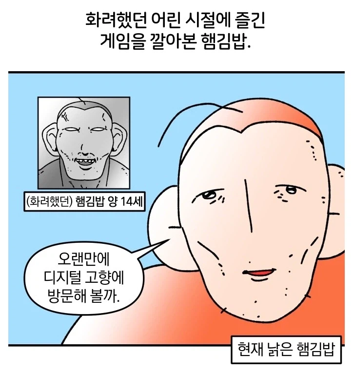
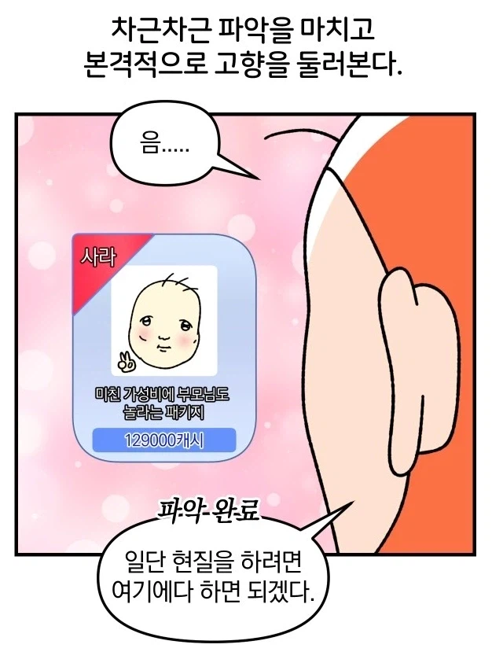
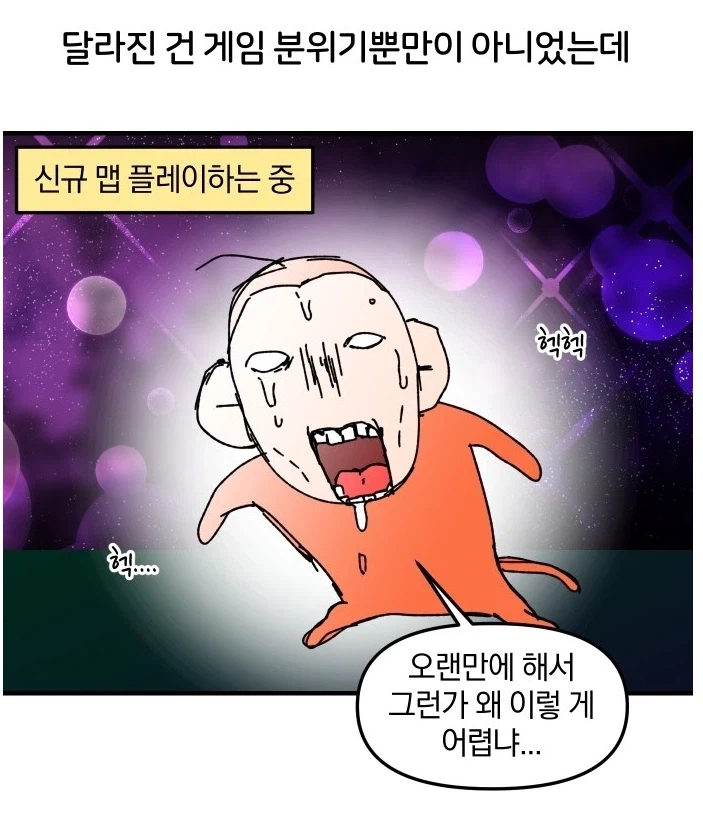
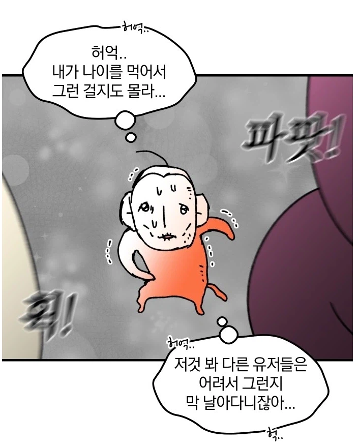
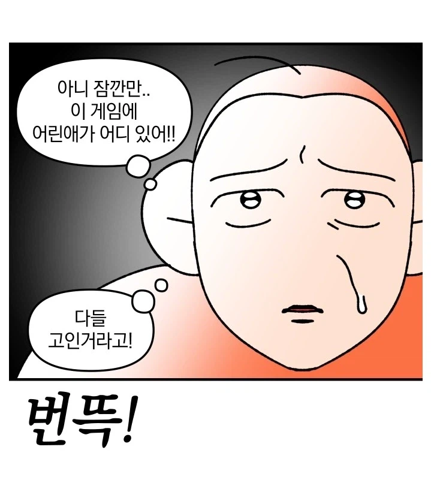
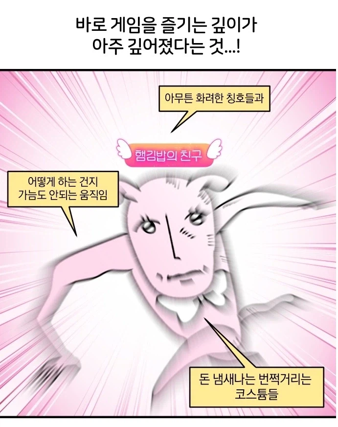
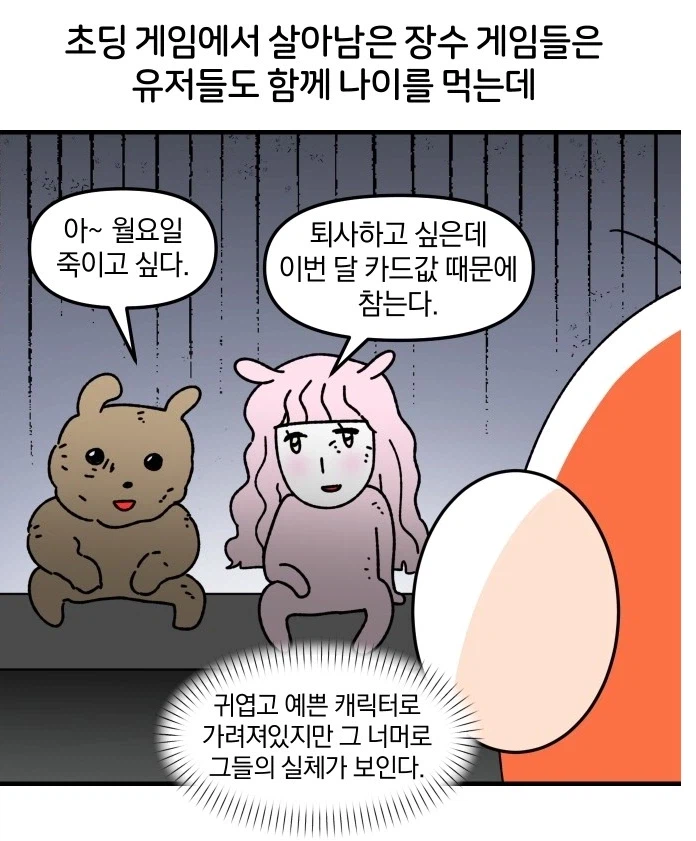
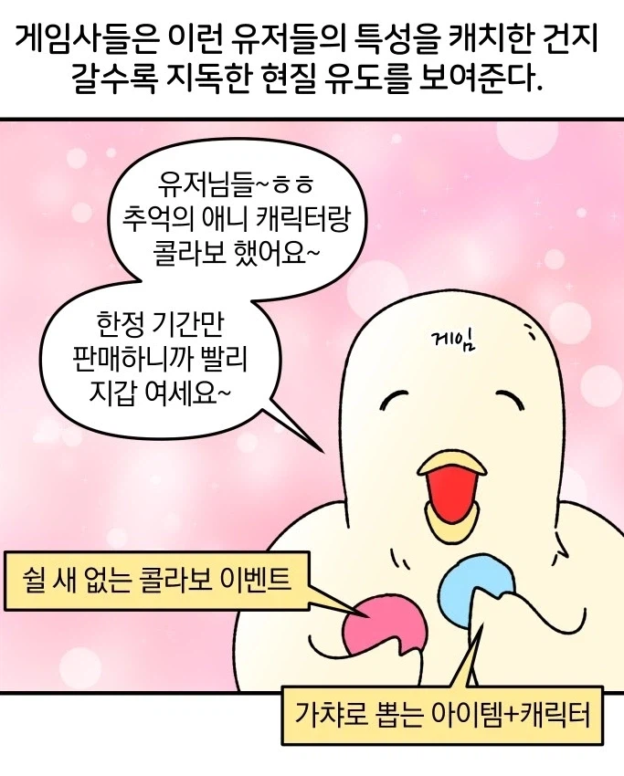

테일즈런너로 추정
테런 고인물들은 진짜로 멀쩡한 길로 안다니고 허공답보를 쓰며
달아다닌다








테일즈런너로 추정
테런 고인물들은 진짜로 멀쩡한 길로 안다니고 허공답보를 쓰며
달아다닌다
숏컷으로만 다니는데
말도 안나오는 숏컷으로만 다님 ㅋㅋㅋㅋㅋㅋㅋㅋㅋㅋㅋㅋㅋㅋㅋ
테런이네 ㅋㅋㅋ 저게임 요즘 90년대생들 취향저격 콜라보 준내하더라 ㅋㅋㅋ
테런이 의외로 어린 유저가 많아서 놀랐음
테런 뭐 속도 빠르면 맵도 뚫리던데
테런은 어렸을때 했을때도 진짜 유치하다 생각 엄청했는데 저걸 나이먹고 어케 다시하냐...
광장인가 사람들 모이는데 거기가면 야한거좋아하는 초딩들이랑 그런애들 낚아볼려는 추잡한 어른밖에안보여서 토쏠림
그나마 성인향이던 서든조차 스킨 떡질인데 그보다 더 대상이 낮았던 게임은 더 화려해짐 ㅋㅋㅋㅋ
그래서 클래식 나오는거지
궁금한 게 우리 나라에서 게임을 "놀다"라고 쓰는 지역이 어디야?
중국은 잘 몰라서...
중국은 그냥 전체가 다 게임을 놀다라고 써
뭐라는거야 씨발
왜 욕지거리여 제목 보고 사투리처럼 게임을 놀다라고 쓰는 지역이 어딘지 궁금해진건데
어머니 돌아가심?
그 반대로 달리는 남캐 잘생겨서 그거 얻으려고 현질 했던가 또 바닷가에서 온 사투리 쓰는 여자애도 이뻤고 ㅋㅋㅋ
거상 유전데 이 새끼들은 외모에 대해 존나 신경안쓰는게 빡침
2차 본캐 직업 고정시키고 긴 중반구간 성능캐를 남캐로 만들어서 아득바득 남캐하게 시키고
유일한 여캐 다문천왕한테 굳이 남캐 명왕 집어넣음
ㅅㅂ ts스킨이라도 내라고
어릴때 저거 재미있게했는데 ㅋㅋㅋ
저 겜으로 여친사귀어서 아다뗐었지
테일즈러너인가?